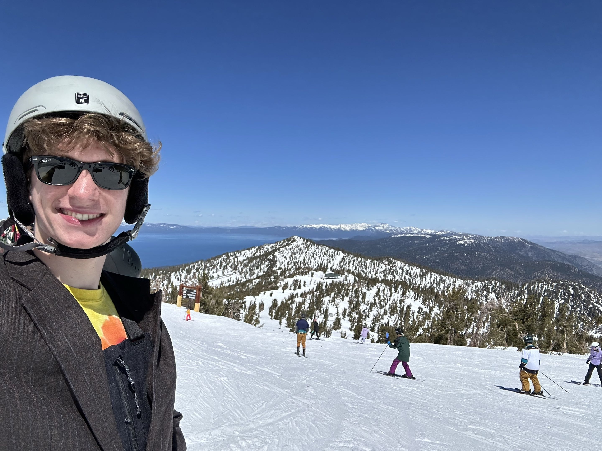
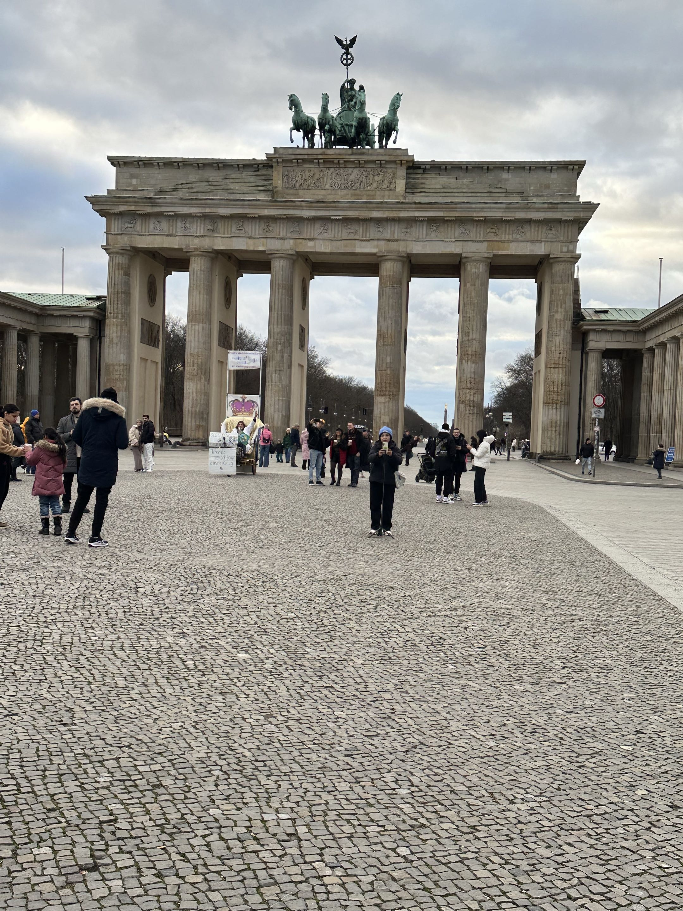

What I'm Involved In


Hiking Acatenango Volcano, Guatemala
This was one of my most recent hikes and also most enjoyable. Getting out of the country to Guatamala, hiking this volcano truly was a once in a lifetime opportunity. It was a very challenging 2-day hike, but the views were amazing.

Snowboarding
Snowboarding is something I really got into during my time at CU Boulder, having the mountains so close by. I always try to get up when I can, and it's a great way to take a break from schoolwork and get outside.


Travelling
While travelling is not really an everyday hobby, I have been fortunate to have the opportunity to travel to some amazing places. I studied abroad during the Spring of 2025 and really got to explore various countries and cities.
Why These Experiences Matter
While these experiences don't directly correlate to my field of study, they are important parts of my life and shape who I am as a person, which reflects in my work and how I approach challenges. One of the biggest things for me in recent years is just getting out of my comfort zone and really trying to do new things. Whether I enjoy it or not, the experience is good for me to grow.